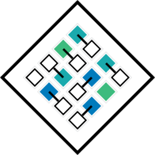
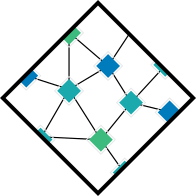
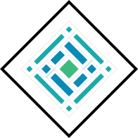
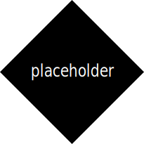
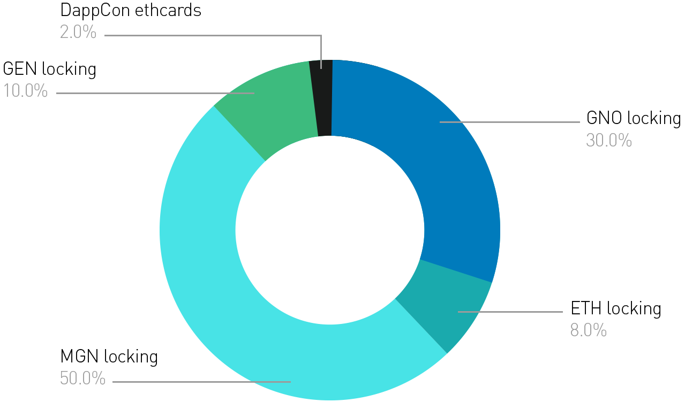

<template>
  <div class="landing-page animated-page container au-animate">
    <div><button class="btn btn-link" click.delegate="router.navigateToRoute('dashboard', null,  {trigger: true})">Dashboard</button></div>
    <div class="main-header">
      
      <div class="title">DutchX DAO</div>
    </div>

    <div class="countdown">${msUntilCanLockCountdown() | timespan:"seconds" & signal:'countdown'} to
      take part in:</div>

    <div class="icon-section">
      <div class="icon"></div>

      <div class="header">A Better Way To Trade</div>

      <div class="body-text">
        The DutchX DAO has the mission to facilitate open trade of anything of value. It will develop, deploy, and
        govern
        decentralized trading platforms. The first DEX the DutchX DAO will deploy is the DutchX, an open trading
        protocol
        for
        ERC20 tokens using the Dutch auction mechanism to determine a fair value for tokens and mitigate many harmful
        trading
        practices such as frontrunning, low liquidity, and third-party risk. You can find all information and
        documentation
        about the DutchX here.
      </div>
    </div>

    <div class="icon-section">
      <div class="icon"></div>

      <div class="header">Completely Decentralized</div>

      <div class="body-text">
        A community-owned DAO gives traders, market makers, and community members the unique opportunity to govern the
        DutchX, allowing them to list tokens, manage fees, update the protocol, and more!
      </div>
    </div>

    <div class="icon-section">
      <div class="icon"></div>

      <div class="header">Holographic Governance</div>

      <div class="body-text">
        Holographic consensus enables the DAO to easily scale, and onboard more traders, liquidity providers, and
        protocol
        hackers to its trading ecosystem.
      </div>
    </div>

    <div class="icon-section">
      <div class="icon"></div>

      <div class="header">How and What?</div>

      <div class="question">What is the Mission?</div>

      <div class="body-text">
        For a decentralized protocol to reach its full potential, every layer of the stack must be decentralized,
        including
        governance. When a protocol is sufficiently decentralized at each layer, it becomes more resilient and
        ultimately
        trustworthy for its users.
      </div class="body-text">

      <div class="body-text">A DAO governed protocol is akin to a hydra. Without a central governing body to eliminate,
        the protocol becomes
        self-sustaining and more adaptable to adversarial risks. When the direction and parameterization of the
        protocol
        is
        collectively governed, users become more confident that further versions will align with their interests.</div>

      <div class="body-text">In the future software—through the collective help of human actors—will own, run, and
        strategize for itself.
        Unlimited value exchange is one of the most critical and vulnerable components of the decentralization stack
        and
        where this future begins.</div>

      <div class="question">What is there to govern?</div>

      <div class="body-text">
        The DutchX DAO can decide on any governance questions relating to DutchX DAO or the DutchX protocol. Some
        examples
        include
        voting on further reputation distribution, changing the fee structure, incentivizing additional marketing
        efforts,
        or
        liquidity provision on the DutchX protocol. The DAO may additionally find a need to fund its future open-source
        development, which would require decision-making around allocating collected fees.
      </div>

      <div class="question">What is the thought behind the initial reputation distribution?</div>

      <div class="body-text">
        DutchX DAOs’s initial reputation distribution seeks to widely distribute participation in the DAO to
        individuals
        or
        Ethereum projects that take interest in governance of decentralized applications and exchanges, while still
        keeping
        the ways to obtain reputation accessible to a large user base.
      </div>

      <div class="question">How do you vote and what is Reputation?</div>

      <div class="body-text">
        Voting will be carried out using Alchemy, the friendly DAO interface powered by DAOstack. Reputation (REP) is
        the
        voting power a given address possesses. Governance proposals submitted to the DAO may pass through either an
        absolute
        majority of voting power, that is, greater than 50% of the aggregate reputation, or a relative majority,
        consisting
        of a simple majority of reputation in a given time frame. The shift in quorum from an absolute majority to a
        relative
        majority, called boosting, is powered by the holographic consensus framework.
      </div>

      <div class="question">How much and how is Reputation exactly distributed?</div>

      <div class="body-text">The initial amount of Reputation (REP) to be distributed is one million.</div>

      <div class="pie-chart">
        
      </div>

      <div class="body-text">
        There are various different ways to obtain Reputation. The following percentages are split between the
        participants of each group. The exact mechanism is explained further below.
      </div>
      <ul>
        <li>8% (=fixed 80k REP) are distributed to participants locking ETH</li>
        <li>30% (=fixed 300k REP) are distributed to participants locking any token traded on the DutchX</li>
        <li>10% (=fixed 100k REP) are distributed to participants taking part in an auction, selling GEN</li>
        <li>2% (=fixed 20k REP) are distributed to participants activating their DappCon Ethercard</li>
        <li>50% (=fixed 500k REP) are distributed to participants activating their Magnolia account</li>
      </ul>

      <div class="body-text">
        Participants use as many REP generating methods as you please. Your reputation is then totaled at the end of
        the
        Initiation Phase.
      </div>

      <div class="question">What are the steps in this process?</div>

      <div class="body-text">
        <a href="https://daostack.io" target="_blank">DAOstack</a> and <a href="https://www.gnosis.pm/" target="_blank">Gnosis</a>
        are working full-speed for you! These are the steps towards a fully functional DutchX DAO:
      </div>

      <ol>
        <li><span class="important">Pre-initiation phase</span> -
          Working to get this up and running for you. Join the conversation in this forum.</li>
        <li><span class="important">Initialization Phase - ${lockingPeriodStartDate | date:"friendly"} -
            ${lockingPeriodEndDate | date:"friendly"}</span> -
          This is when you can take part in the above-mentioned Reputation distribution.</li>
        <li><span class="important">Redemption - Beginning ${lockingPeriodEndDate | date:"friendly"}</span> -
          Immediately after the initiation period is over, you may redeem your REP here. We do not limit this period.</li>
        <li><span class="important">Governance Phase - Beginning ${lockingPeriodEndDate | date:"friendly"}</span> -
          Be an active voting member in the DutchX DAO. Join the discussion in this <a href="https://daotalk.org/"
            target="_blank">Forum</a>.</li>
      </ol>
    </div>
  </div>
</template>
